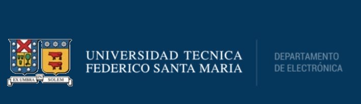

Automatización, sensores, actuadores y control de procesos industriales y otros sistemas.

Puertas Abiertas 2026
Casa Central · Valparaíso
Ingeniería Civil Electrónica
Diseña, controla y conecta sistemas donde el hardware, el software y el mundo físico trabajan juntos.
CONTROL · HARDWARE · ENERGÍA · COMPUTACIÓN · COMUNICACIONES
La carrera en un vistazo
Ingeniería para conectar el mundo físico y digital
La USM describe una formación que integra hardware, software y sistemas físicos, con posibilidad de profundizar en áreas de especialidad. Se imparte en régimen diurno en Campus Casa Central Valparaíso.
5años
10semestres
4áreas de especialidad
Especialización
¿Hacia dónde puedes llevarla?
La información oficial de Admisión presenta cuatro áreas de especialidad para Ingeniería Civil Electrónica.
Hardware, software, firmware, máquinas digitales y sistemas embebidos conectados.
Conversión y control de energía, accionamientos, almacenamiento y energías renovables.
Comunicaciones, procesamiento digital de señales, transmisión y tecnologías inalámbricas.
Robótica
Hardware
Programación
Automatización
Energía
Telecomunicaciones
I+D
Preguntas frecuentes
Lo que probablemente quieres saber
Toca una pregunta para ver la respuesta. Solo una puede quedar abierta a la vez.
01¿Cuánto dura la carrera y dónde se imparte?
La USM informa una duración de 5 años (10 semestres académicos), en régimen diurno, en el Campus Casa Central Valparaíso.
02¿Qué título y grado académico obtengo?
Al completar la carrera obtienes el título profesional de Ingeniero Civil Electrónico / Ingeniera Civil Electrónica y el grado académico de Licenciado/a en Ciencias de la Ingeniería Electrónica.
03¿Qué especialidades puedo elegir?
La información oficial de Admisión presenta cuatro áreas de especialidad:
Control e Instrumentación
Estructuras y Sistemas Computacionales
Electrónica de Potencia y Conversión de Energía
Telecomunicaciones y Procesamiento de Señales
El perfil oficial señala que la formación en una de estas áreas comienza a partir del octavo semestre.
04¿Qué pruebas PAES necesito?
Para Admisión 2026, la USM indica que M2 es obligatoria para postular a las ingenierías y licenciaturas, salvo Ingeniería Comercial. La tabla de ponderaciones para carreras que exigen M2 es:
NEM15%
Ranking20%
M135%
M210%
Lectora10%
Ciencias / Historia10%
05¿Necesito un puntaje mínimo para postular?
Sí. Para el proceso de Admisión 2026, la USM exige un promedio mínimo de 485 puntos entre Competencia Lectora y Competencia Matemática 1 para poder postular por la vía centralizada.
Para Ingeniería Civil Electrónica, la tabla oficial de Admisión 2026 establece además un puntaje ponderado mínimo de 600.
El puntaje ponderado mínimo es un requisito de postulación; no corresponde necesariamente al puntaje de corte o al último seleccionado.
06¿Existen otras formas de ingresar?
Sí. La USM también cuenta con Admisión Especial, con distintas vías y requisitos según cada modalidad.
Como los mecanismos, cupos y condiciones pueden cambiar entre procesos, esta landing enlaza directamente la página oficial de Admisión Especial para revisar la convocatoria vigente.
07¿Se realizan prácticas profesionales durante la carrera?
Sí. Ingeniería Civil Electrónica contempla dos prácticas universitarias obligatorias: una Práctica Industrial y una Práctica Profesional.
Cada una corresponde a 8 semanas (320 horas / 2 meses a jornada completa). El Departamento señala realizarlas al finalizar el 6.º semestre y el 10.º semestre, respectivamente.
08¿Qué diferencia hay con Ingeniería Civil Informática?
Ambas carreras comparten programación y computación, pero el foco cambia.
En Electrónica, el software se combina con hardware y sistemas físicos: circuitos, sensores, actuadores, control, comunicaciones, sistemas embebidos y electrónica de potencia. En Informática, el centro de gravedad está más en software, algoritmos, datos y sistemas computacionales.
09¿En qué puedo trabajar?
La propia USM describe la Ingeniería Civil Electrónica como una disciplina transversal, presente en una amplia variedad de actividades industriales y tecnológicas. Algunos ejemplos de salida laboral son:
Automatización y control · procesos industriales, instrumentación y supervisión.
Energía y electrónica de potencia · conversión, accionamientos, almacenamiento y renovables.
Computación embebida · hardware, firmware, sistemas digitales y dispositivos inteligentes.
Telecomunicaciones y señales · transmisión, procesamiento de señales y sistemas inalámbricos.
I+D y proyectos · diseño, integración, innovación y participación en proyectos multidisciplinarios.
10¿Qué voy a estudiar?
La formación combina ciencias básicas, ciencias de la ingeniería y aplicaciones electrónicas.
Entre los temas aparecen matemáticas, física, programación, teoría de redes eléctricas, electrónica, sistemas digitales, control automático, estructuras de computadores, electromagnetismo, comunicaciones, probabilidad, sistemas electromecánicos y formación en gestión, además de asignaturas que puedes escoger según tu trayectoria.
La malla oficial es la mejor referencia para revisar la distribución completa del plan.
Próximo paso
Rutas y Talleres
Inscríbete en el formulario para participar en las Rutas y Talleres de Puertas Abiertas.
FORMULARIO CONECTADO
Abrir formulario →
Información oficial
La landing resume información útil para visitantes, pero los requisitos de admisión y documentos deben verificarse en los canales oficiales de la Universidad.